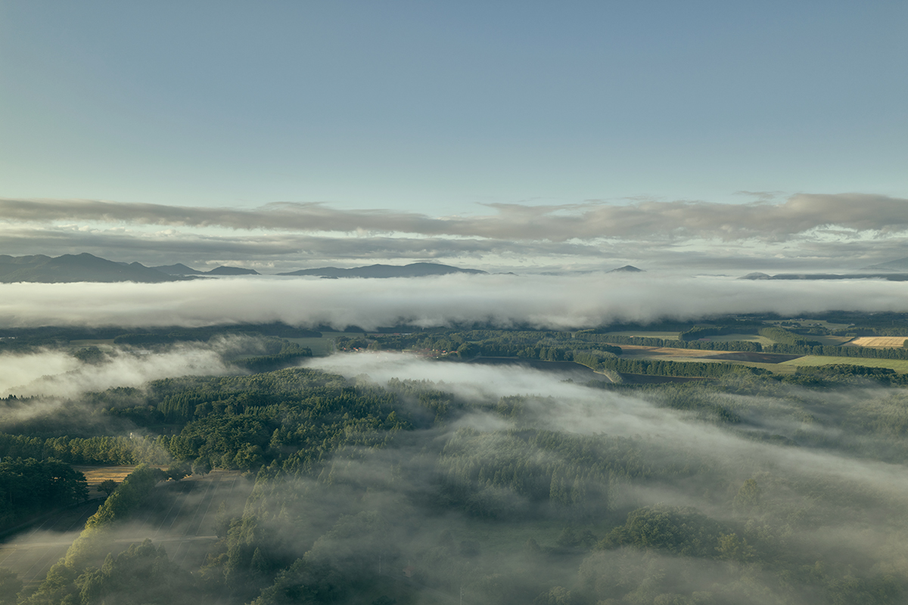
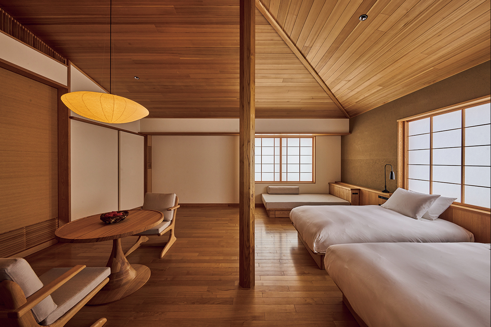
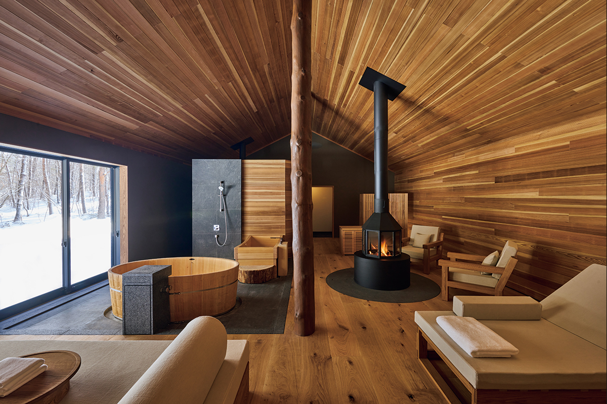
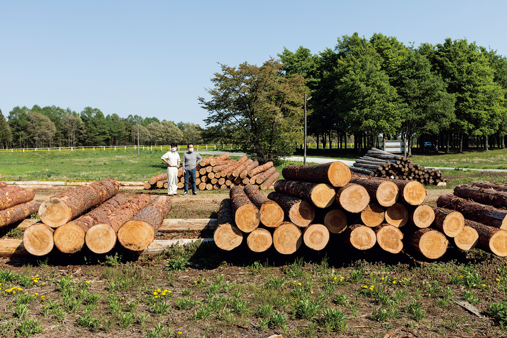
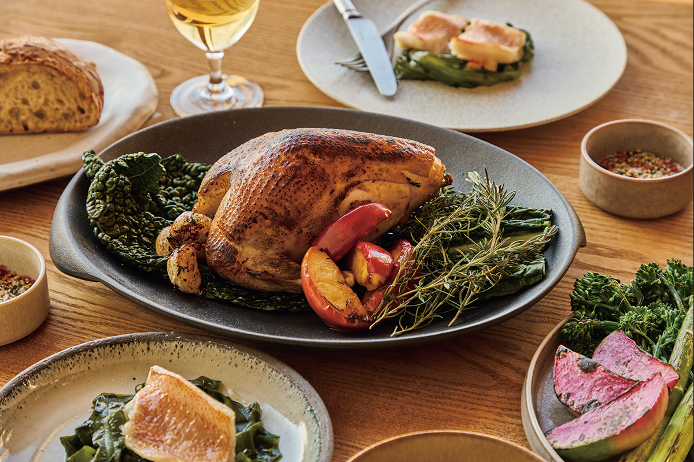
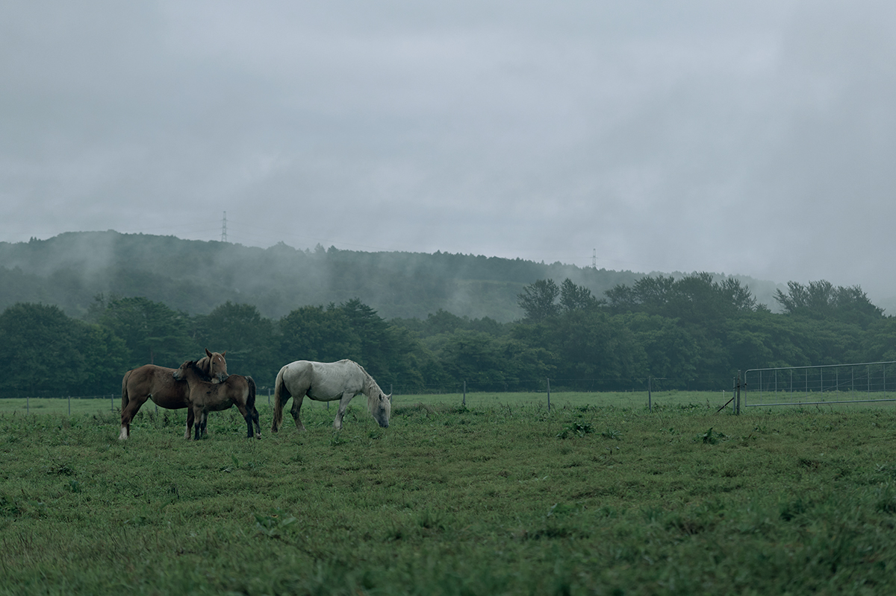

Префектура Иватэ · Сидзукуиси · гостиница
AZUMA FARM Koiwai: гостиница основателя Aman в лесу фермы Коиваи

Эдриан Зекха, создатель курортов Aman, давно известен умением находить места с особой силой. Его новый адрес оказался на севере Японии: 23 апреля 2026 года в префектуре Иватэ открылась гостиница AZUMA FARM Koiwai.
Кто
Новый проект легендарного отельера
Эдриан Зекха основал сеть Aman Resorts и стал одним из самых известных отельеров мира. Он жил в Японии, очень любит её культуру и славится чутьём на места, где курорт может раскрыть характер земли.
Его многолетний соратник основал бренд Azumi, построенный на идеях японского рёкана. Раньше бренд открыл Azumi Setoda в городе Ономити префектуры Хиросима: этот отель бережно раскрывает гостям природу и культуру своего края. AZUMA FARM Koiwai продолжает эту линию.

Место
Ферма, выросшая на вулканическом пепле
Девиз гостиницы звучит как «A Down to Earth Farm Stay», то есть отдых на ферме, когда чувствуешь землю под ногами. Стоит она на ферме Коиваи в посёлке Сидзукуиси.
Когда-то здесь лежала бесплодная равнина на вулканическом пепле. В эпоху Мэйдзи (1868–1912) землю распахали, посадили лесозащитные полосы и улучшили почву, и пустошь превратилась в ферму. Коиваи много сделала для развития молочного дела в Японии, а до войны здесь растили и скаковых лошадей. Деревья на ферме сажали с самого её основания, и в 2026 году лес здесь всё так же растят.

Как устроено
Виллы из столетних деревьев
В этом лесу и разместилась гостиница. Между деревьями разбросаны виллы, ресторан, лаунж и частные сауны. Чтобы лес продолжал обновляться, для строительства выбирали деревья, которым пришло время рубки, и они получили вторую жизнь в стенах зданий.

Кухня строится на дарах гор и моря, в первую очередь из Иватэ. Завтрак здесь фермерский: на выбор европейский, с только что надоенным молоком, или японский.

Чем заняться
Ворота в Тохоку
Главное в программе гостиницы это занятия, которые помогают понять природу и уклад северо-востока Японии, региона Тохоку. Есть прогулки на природе и ремесленные туры, конные прогулки и наблюдение за звёздами. Можно отправиться в ремесленный тур к мастерам чугунной посуды намбу-тэкки или познакомиться с лошадьми «Тягу-тягу умакко».

Для многих путешественников Тохоку остаётся неизвестным краем, и AZUMA FARM Koiwai задумана как вход в него.
AZUMA FARM Koiwai
- Адрес
- префектура Иватэ, уезд Иватэ, Сидзукуиси, Маруяти, 68-77
- Цены / Вход
- от 235 400 иен за номер на двоих, с налогом и сервисным сбором; включены завтрак и ужин, бесплатный трансфер от станции Мориока и занятия в гостинице
- Сайт
- azumafarms.com
Фото: Томохиро Сакасита.